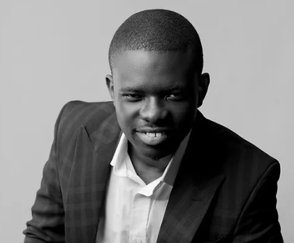

Olutayo Fasunon
Scrum Master

Summary
Highly motivated and results oriented data scrum master with 12+ years experience leading cross-functional teams in the successful delivery of data-driven products using agile frameworks (Scrum, Kanban). Skilled in Agile project management, lean thinking, scrum ceremonies facilitation and data analysis to ensure efficient execution, continuous improvement and maximisation of data insights. Proven ability to foster collaborative environments and coach teams to adopt agile values for improved productivity and defect reduction.
Certifications
- Certified Scrum Master
- Certified SaFE Scrum Master
Work Experience
LearnR Immersive Inc
- Facilitates scrum events (sprint planning, sprint retrospective, sprint review) as well as backlog refinement; while coaching the team on the observance and effectiveness of the daily scrum
- Works with the product owner to promote team-wide adoption of the Scrum framework. This has resulted in increased ability to respond to changing customer needs.
- Coached the cross-functional team on agile values, ceremonies, and artefacts, fostering a culture of continuous learning and innovation.
- Streamlined cross-functional collaboration with product and development teams to reduce development cycle time from 4 weeks to 3 weeks.
- Collaborates with developers to formulate the sprint plan and deliver ont eh sprint goal.
- Anticipates and removes impediments that may interfere with project delivery in order to minimize risk.
Scrum Master/ Assets Manager | Sinking Ship Entertainment, Toronto, ON
- Supported the digital assets team through scrum adoption, enabling self-management and on-time delivery of over 1000 assets for animation and VFX projects
- Streamlined commumnication processes, reducing asset-related issue resolution time by 75% (from 2 weeks to less than one day)
- Coached the team on data-driven decision-making, utilizing insights from online, realtime reports to inform emergent planning and to avoid cost overruns.
VFX Production Manager | MPC VFX
- Analysed daily, weekly and monthly quota requirements for all departments to inform resourcing decisions
- Facilitated agile ceremonies which provided increasing transparency on the work being done, promoting shared ownership among a global team of over 200 artists working across four continents
- Anticipated and removed impediments from the project team, through active engagement wtih senior management
- Facilitated PI planning equivalent with delivery team and scrum of scrums equivalent with production coordinators